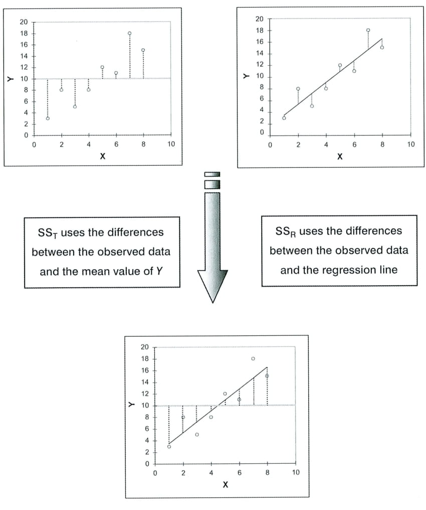

flowchart LR
A[ Orga ] --> B(STP)
B --> C{Inhalt}
C --> D[univariate]
C --> E[bivariate]
C --> F[multivariate]
Statistik Aufbau: Einführung
Orga, Rückblick, Vorschau
Benjamin Fretwurst
1 Orga
Das sieht noch grütze aus!
Da muss ich noch schauen, wie ich das besser hinbekomme.
1.1 Intro
1.2 Lernziele
Korrelation und Regression
- Korrelation
- Regression
- bivariat
- multivariat
2 GLM
Das lineare Modell ist die Basis von fast allem. Auch was Sie schon kennen, wird unter dem Konzept “lineares Modell” zusammengefasst:
- Varianzanalyse
- Korrelation
- Regression
2.1 bivariate Regression Y ← X
\[\begin{align}
Y_i & = \overline{Y} + e_i\\
Y_i & = b_1 + b_2X_i + e_i\\
\hat{Y_i} & = b_1 + b_2X_i \\
Y_i & = \hat{Y_i}+e_i\\
SS_T & = SS_R+SS_M
\end{align}\]

2.2 Kreuztabellen
Beispiel für eine Kreuztabelle mit Link zu mehr (interaktiven) Kreuztballen:

3 R
3.1 R-Chunks in Quarto
3.2 R-Chunks in Quarto
Code anzeigen
Call:
lm(formula = Y ~ X_2 + X_3, data = DATEN)
Residuals:
Min 1Q Median 3Q Max
-5.3455 -2.3656 0.3684 2.4642 4.9255
Coefficients:
Estimate Std. Error t value Pr(>|t|)
(Intercept) 5.6408 0.8166 6.908 5.16e-10 ***
X_2 0.6823 0.1395 4.890 4.00e-06 ***
X_3 0.4430 0.2100 2.109 0.0375 *
---
Signif. codes: 0 '***' 0.001 '**' 0.01 '*' 0.05 '.' 0.1 ' ' 1
Residual standard error: 2.904 on 97 degrees of freedom
Multiple R-squared: 0.4783, Adjusted R-squared: 0.4676
F-statistic: 44.47 on 2 and 97 DF, p-value: 1.968e-143.3 Mit sjPlot kann man den Output besser anpassen und druckfertig gestalten
Code anzeigen
| Y | |||
| Predictors | std. Beta | standardized CI | p |
| (Intercept) | -0.00 | -0.14 – 0.14 | <0.001 |
| X 2 | 0.51 | 0.31 – 0.72 | <0.001 |
| X 3 | 0.22 | 0.01 – 0.43 | 0.037 |
| Observations | 100 | ||
| R2 / R2 adjusted | 0.478 / 0.468 | ||
4 Interaktive Folien
4.1 Einflüsse von N, \(\sigma_x\) und \(\sigma_y\) auf die Regressionsgerade
viewof N = Inputs.range([50, 1e3], {label: "N", step: 50})
viewof sdx = Inputs.range([0, 1.5], {label: tex`\sigma_x`, title: "test", step: 0.01})
viewof sdy = Inputs.range([0, 1.5], {label: tex`\sigma_y`, step: 0.01})
betatrue=[0,1]
beta = {
const xbar = d3.mean(data, (d) => d.x);
const ybar = d3.mean(data, (d) => d.y);
const numerator = d3.sum(data.map(d => (d.x - xbar) * (d.y - ybar)));
const denominator = d3.sum(data.map(d => Math.pow(d.x - xbar, 2)));
const betahat = numerator / denominator;
const alphahat = ybar - betahat * xbar;
return [alphahat, betahat];
}
truedata = {
const results = [];
for(let i = 0; i < N; i++) {
const x = rnorm();
const y = x;
results.push({ x, y });
}
return results;
}
data_x = truedata.map(d => ({
x: d.x + rnorm() * sdx,
y: d.y
}));
data = data_x.map(d => ({
x: d.x,
y: betatrue[0] + betatrue[1] * d.y + rnorm() * sdy
}));
function rnorm() {
// https://stackoverflow.com/questions/25582882/javascript-math-random-normal-distribution-gaussian-bell-curve
let u = 0, v = 0;
while(u === 0) u = Math.random(); //Converting [0,1) to (0,1)
while(v === 0) v = Math.random();
return Math.sqrt( -2.0 * Math.log( u ) ) * Math.cos( 2.0 * Math.PI * v );
}
confidence_grid = Array(101).fill(0).map((d, i) => -5 + 10 * i / 100)
confidence_bands = {
const xbar = d3.mean(data, d => d.x);
const resids = data.map(d => beta[0] + beta[1] * d.x - d.y);
const resids_sq = d3.sum(resids.map(d => Math.pow(d, 2)));
const crit = jstat.studentt.inv(0.975, N - 2);
const denominator = d3.sum(data.map(d => Math.pow(d.x - xbar, 2)));
const diff = confidence_grid.map(d => crit * Math.sqrt((1 / (N - 2)) * resids_sq * (1 / N + Math.pow(d - xbar, 2) / denominator)));
return diff.map((d, i) => (
{
x: confidence_grid[i],
lower: beta[0] + beta[1] * confidence_grid[i] - d,
upper: beta[0] + beta[1] * confidence_grid[i] + d
}
));
}
jstat = require('jstat@1.9.5/dist/jstat.js')chart = {
const width = 640;
const height = 400;
const margin = {top: 20, right: 30, bottom: 30, left: 40};
const x = d3.scaleLinear()
.domain([-5, 5])
.range([margin.left, width - margin.right]);
const y = d3.scaleLinear()
.domain([-5, 5])
.range([height - margin.bottom, margin.top]);
const svg = d3.create("svg")
.attr("width", width)
.attr("height", height);
svg.append("g")
.attr("transform", `translate(0,${height - margin.bottom})`)
.call(d3.axisBottom(x));
svg.append("g")
.attr("transform", `translate(${margin.left},0)`)
.call(d3.axisLeft(y));
svg.selectAll("circle")
.data(data)
.enter()
.append("circle")
.attr("r", 2)
.attr("cx", d => x(d.x))
.attr("cy", d => y(d.y))
.attr("opacity", 0.5);
svg.append("line")
.attr("x1", x(x.domain()[0]))
.attr("x2", x(x.domain()[1]))
.attr("y1", y(beta[0] + beta[1] * x.domain()[0]))
.attr("y2", y(beta[0] + beta[1] * x.domain()[1]))
.attr("stroke", "red");
const points = confidence_bands.map(d => `${x(d.x)},${y(d.lower)}`).join(" ")
+ " " + confidence_bands.slice().reverse().map(d => `${x(d.x)},${y(d.upper)}`).join(" ");
svg.append("polygon")
.attr("points", points)
.attr("stroke", "none")
.attr("fill", "rgba(100, 0, 0, 0.05)");
svg.append("line")
.attr("x1", x(x.domain()[0]))
.attr("x2", x(x.domain()[1]))
.attr("y1", y(betatrue[0] + betatrue[1] * x.domain()[0]))
.attr("y2", y(betatrue[0] + betatrue[1] * x.domain()[1]))
.attr("stroke", "gray");
return svg.node();
}5 Quiz
5.1 Klicker
5.2 Permanent
- Regression
- Regression
- Varianzanalyse
- Varianzanalyse
- Faktorenanalyse
- Faktorenanalyse
- Korrelation
MC_1.1: Richtig oder Falsch?
MC_1_1 = [
["Die Varianzanalyse ist eine Spezialform der Regression.", "richtig"],
["Korrelationen sind auch linear, aber keine Modelle.", "richtig"],
["Faktorenanalysen gehören zu den linearen Modellen.", "falsch"],
["Regressionen werden auch häufig beim Machine Learning eingesetzt.", "richtig"]
]
viewof answers_1_1 = quizInput({
questions: MC_1_1,
options: ["richtig", "falsch"]
})
Punkte_1_1 = {
const Sum =
(answers_1_1[0] == MC_1_1[0][1])*1 +
(answers_1_1[1] == MC_1_1[1][1])*1 +
(answers_1_1[2] == MC_1_1[2][1])*1 +
(answers_1_1[3] == MC_1_1[3][1])*1
var Punkte_1_1 = Sum - 2
if (Punkte_1_1 < 1) {Punkte_1_1 = 0}
return(Punkte_1_1)
}Punkte:
Fretwurst: Statistik Aufbau – Sitzung 1